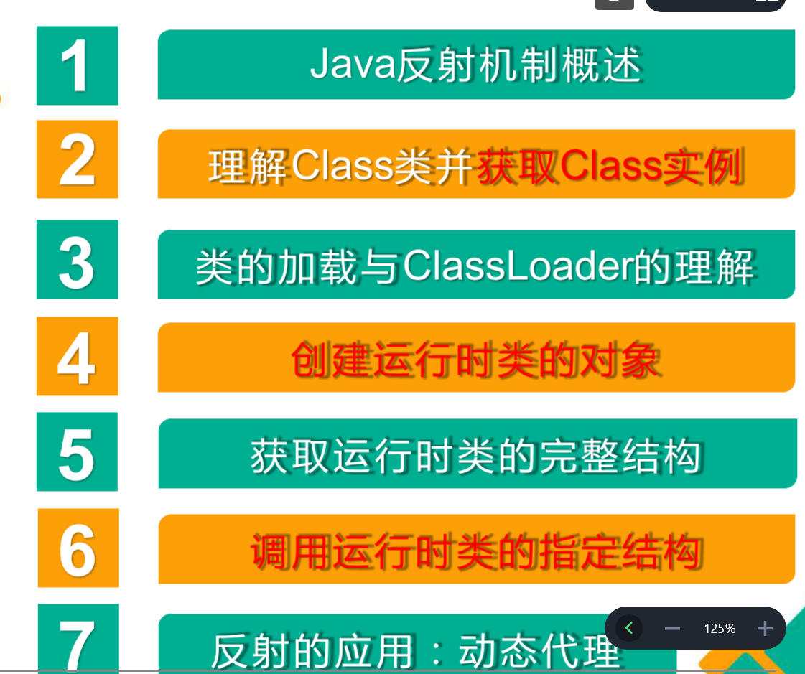
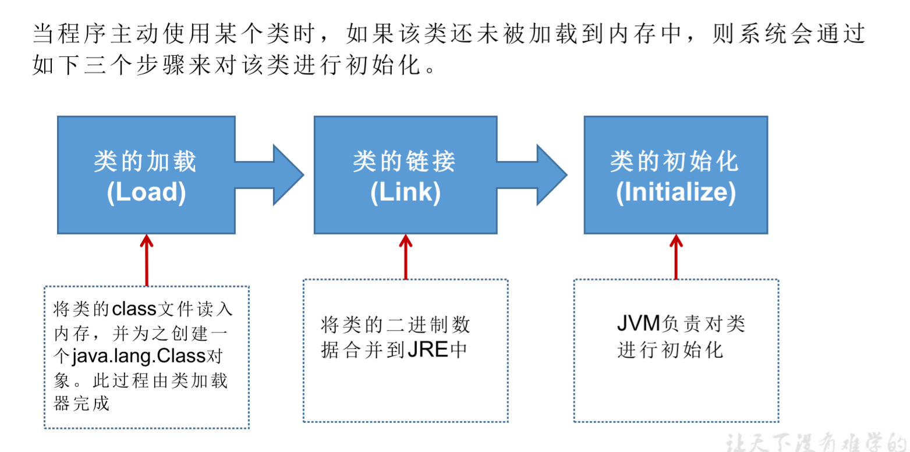
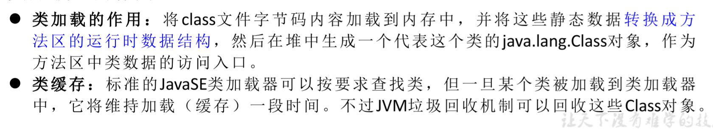
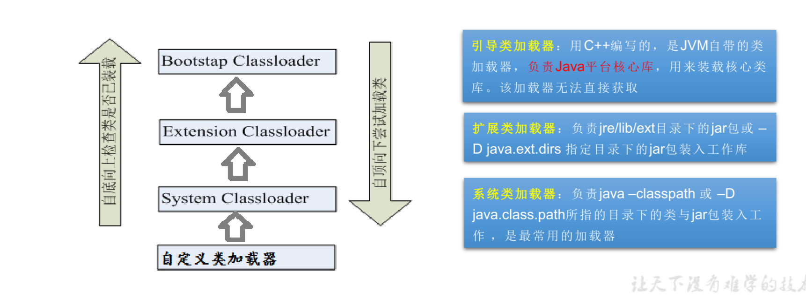
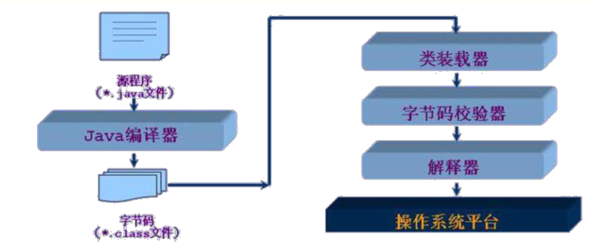

每天一练
- 写出获取Class实例的三种常见方式
Class clazz1 = String.class
Class clazz2 = person.getClass(); // sout(clazz2); xxx.xxx.xxx.Person@…
Class clazz3 = Class.forName(String classPath); // 体现反射的动态性
- 谈谈对Class类的理解
Class实例对应着加载到内存中的一个运行时类。
- 创建Class对应运行时类的对象的通用方法，代码实现。以及这样操作需要对应运行时类构造器方面满足的要求。
Object obj = clazz.newInstance(); // 创建了对应的运行时类的对象
要求：
(1) 必须要有空参的构造器
(2) 权限修饰符的权限要足够。通常设置为public
- 在工程或module的src下有名为“jdbc.properties”的配置文件，文件内容为：name=Tom。如何在程序中通过代码获取Tom这个变量
- 如何调用方法show:
类声明如下
class User{
public void show(){
System.out.println("I am a Chinese");
}
}
User user = (User)clazz.newInstance();
Method show = clazz.getDeclaredMethod("show");
show.setAccessiable(true);
show.invoke(user);
反射概述
反射的基本内容

关于反射的理解
Reflection（反射）是被视为动态语言的关键，反射机制允许程序在执行期 借助于Reflection API取得任何类的内部信息，并能直接操作任意对象的内部属性及方法。
框架 = 反射 + 注解 + 设计模式
体会反射机制的动态性
public void test2() throws IllegalAccessException, InstantiationException, ClassNotFoundException {
int num = new Random().nextInt(3); // 0,1,2
String classPath = "";
switch (num){
case 0 :
classPath = "java.util.Date";
break;
case 1:
classPath = "java.sql.Date";
break;
case 2:
classPath = "Person";
break;
}
Object instance = getInstance(classPath);
System.out.println(instance);
}
/*
创建一个指定类的对象
classPath:指定类的全名
*/
public Object getInstance(String classPath) throws ClassNotFoundException, IllegalAccessException, InstantiationException {
Class clazz= Class.forName(classPath);
return clazz.newInstance();
}
反射机制提供的功能
在运行时判断任意一个对象所属的类
在运行时构造任意一个类的对象
在运行时判断任意一个类所具有的成员变量和方法
在运行时获取泛型信息
在运行时调用任意一个对象的成员变量和方法
在运行时处理注解
生成动态代理
相关API
java.lang.Class 反射的源头
jva.lang.reflect.Method
java.lang.reflect.Filed
java.lang.reflect.Constructor
Class类的理解和获取Class的实例
关于java.lang.Class类的理解
类的加载过程：
程序经过javac.exe命令以后，会生成一个或多个字节码文件(.class结尾）。
接着我们使用java.exe命令对某个字节码文件进行解释运行。
相当于将某个字节码文件加载到内存中，此过程就成为类的加载。
加载到内存中的类，我们就成为运行时的类，此运行时类就作为Class的一个实例。就比如Person.class作为实例Class clazz = Person.class;换句话说，Class实例就对应着一个运行时类
加载到内存中的运行时类，会缓存一定的时间。在次时间之内，我们可以通过不同的方式来获取次运行时的类。
获取Class实例的集中方式: 前三种需要掌握
@Test
public void test3() throws ClassNotFoundException {
// 方式一：调用运行时类的属性：.class
Class<Person> clazz1 = Person.class;
System.out.println(clazz1);
// 方式二：通过运行时类的对象，调用getClass()
Person p1 = new Person();
Class clazz2 = p1.getClass();
System.out.println(clazz2);
// 方式三：调用Class的静态方法：forName(String classPath)
Class clazz3 = Class.forName("Person");// 注意选择的为路径
System.out.println(clazz3);
System.out.println(clazz1 == clazz2);
System.out.println(clazz3 == clazz2);
// 方式四：使用类的加载器：ClassLoader(了解）
ClassLoader classLoader = a_ReflectionTest.class.getClassLoader();
Class class4 = classLoader.loadClass("Person");
System.out.println(class4);
}
创建类的对象的方式
方式一: New + 构造器
方式二: 要创建xxx类的对象,可以考虑:xxx、Xxs、XxxFactory、XxxBuilder类中查看是否有静态方法的存在。可以调用其静态方法，创建Xxx对象。
方式三：通过反射
了解ClassLoader
类的加载过程 – 了解

类的加载器作用

类的加载器的分类

Java类编译、运行的执行的流程

使用ClassLoader加载src目录下的配置文件
/*
Properties:用来读取配置文件。
*/
@Test
public void test2() throws IOException {
Properties properties = new Properties();
// 读取配置文件的的方式一此时默认在module下
// FileInputStream fis = new FileInputStream("1.properties");
// properties.load(fis);
// 此时在src下
ClassLoader classLoader = b_ClassLoaderTest.class.getClassLoader();
InputStream is = classLoader.getResourceAsStream("1.properties");
properties.load(is);
String user = properties.getProperty("user");
String passwd = properties.getProperty("passwd");
System.out.println(user+passwd);
}
反射应用一：创建运行时类的对象
public void test1() throws IllegalAccessException, InstantiationException {
Class clazz = Person.class;
Object obj = clazz.newInstance();
System.out.println(obj);
}
反射应用二：获取运行时类的完整结构
我们可以通过反射，获取对应的运行时类中所有的属性、方法、构造器、父类、接口、父类的泛型、包、注解、异常等。。。。
@Test
public void test1(){
Class clazz = Person.class;
// 获取属性的结构
// getFileds():获取当前运行时类及其父类中声明为public访问权限的属性
Field[] fields = clazz.getFields();
for(Field f : fields){
System.out.println(f);
}
System.out.println();
// getDeclaredFileds();获取当前运行时类中声明的所有属性。（不包含父类中声明的属性）
Field[] declaredFields = clazz.getDeclaredFields();
for(Field f: declaredFields){
System.out.println(f);
}
}
public void test1(){
Class clazz = Person.class;
// getMethods获得当前运行时类及其所有父类中声明为public权限的方法
Method[] methods = clazz.getMethods();
for (Method m : methods){
System.out.println(m);
}
System.out.println();
// getDeclaredMethods获取当前运行时类的所有方法。（不包含父类中的方法）
Method[] declaredMethods = clazz.getDeclaredMethods();
for(Method m : declaredMethods){
System.out.println(m);
}
}
/*
获取构造器结构
*/
@Test
public void test1(){
Class clazz = Person.class;
// getConstructors获得当前运行时类中声明为public的构造器
Constructor[] constructors = clazz.getConstructors();
for(Constructor c : constructors){
System.out.println(c);
}
System.out.println();
// getDeclaredConstructor()获取当前运行时类中声明所有的构造器
Constructor[] declaredConstructors = clazz.getDeclaredConstructors();
for(Constructor c : declaredConstructors){
System.out.println(c);
}
}
/*
获取运行时类的父类
*/
@Test
public void test2(){
Class clazz = Person.class;
Class superclass = clazz.getSuperclass();
System.out.println(superclass);
}
/*
获取运行时类带泛型的父类
*/
@Test
public void test3(){
Class clazz = Person.class;
Type genericSuperclass = clazz.getGenericSuperclass();
ParameterizedType genericSuperclass1 = (ParameterizedType) genericSuperclass;
// 获取泛型类型
Type[] actualTypeArguments = genericSuperclass1.getActualTypeArguments();
System.out.println(actualTypeArguments[0].getTypeName());
System.out.println(genericSuperclass);
}
/*
获取运行时类的带泛型的父类的泛型
*/
@Test
public void test4(){
Class clazz = Person.class;
Type genericSuperclass = clazz.getGenericSuperclass();
ParameterizedType paramtype = (ParameterizedType) genericSuperclass;
// 获取泛型类型
Type[] actualTypeArgumnets = paramtype.getActualTypeArguments();
// System.out.println(actualTypeArgumnets[0].getTypeName());
System.out.println(((Class)(actualTypeArgumnets[0])).getName());
}
/*
获取运行时类实现的接口
*/
@Test
public void test5(){
Class clazz = Person.class;
Class[] interfaces = clazz.getInterfaces();
for(Class c : interfaces){
System.out.println(c);
}
System.out.println();
// 获取运行时类父类实现的接口
Class[] interfaces1 = clazz.getSuperclass().getInterfaces();
for(Class c : interfaces1){
System.out.println(c);
}
}
/*
获取运行时类所在的包
*/
@Test
public void test6(){
Class clazz = Person.class;
Package aPackage = clazz.getPackage();
System.out.println(aPackage);
} /*
获取运行时类声明的注解
*/
@Test
public void test7(){
Class clazz = Person.class;
Annotation[] declaredAnnotations = clazz.getDeclaredAnnotations();
for(Annotation a : declaredAnnotations){
System.out.println(a);
}
}